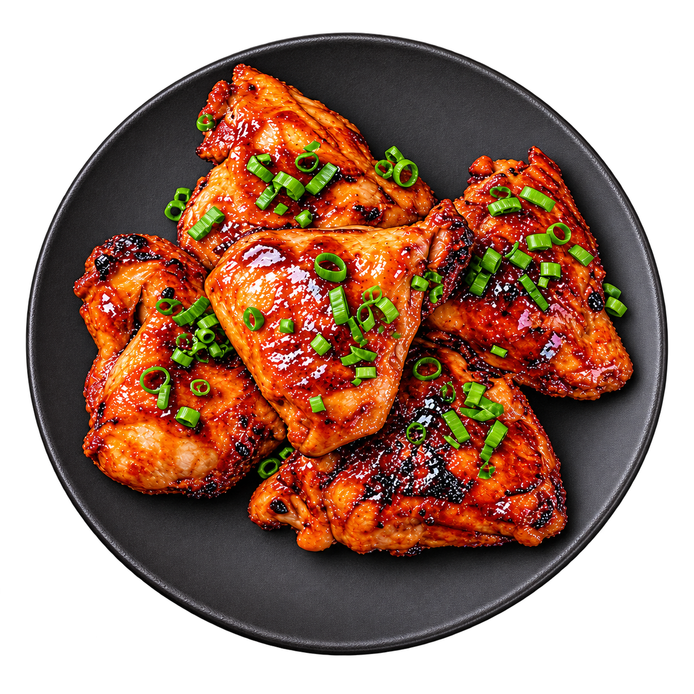
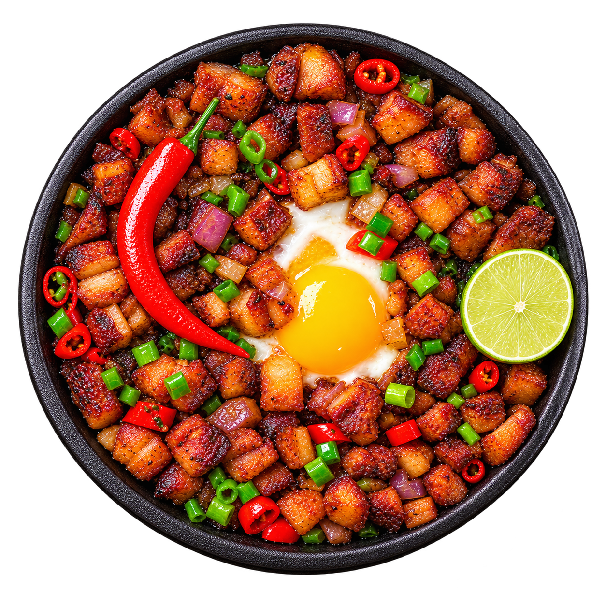
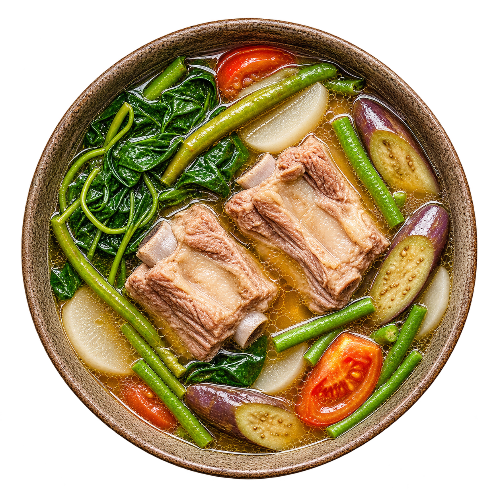
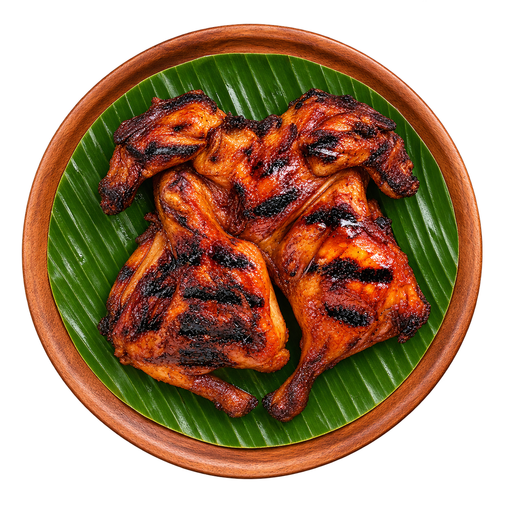
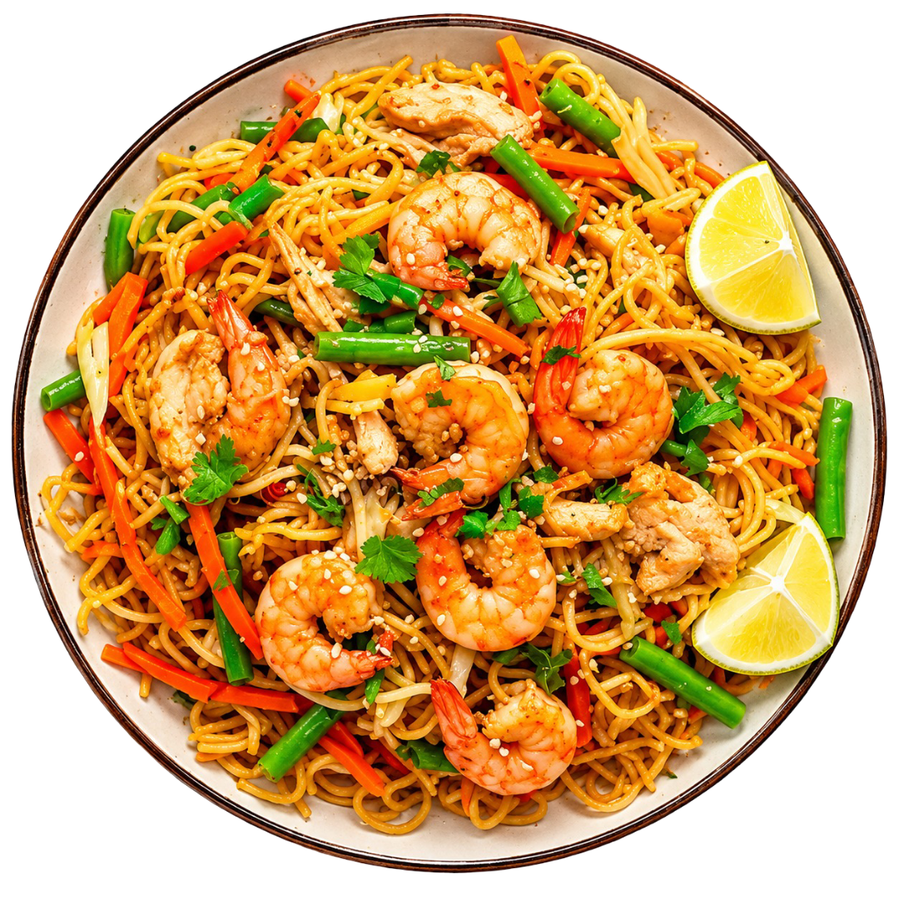
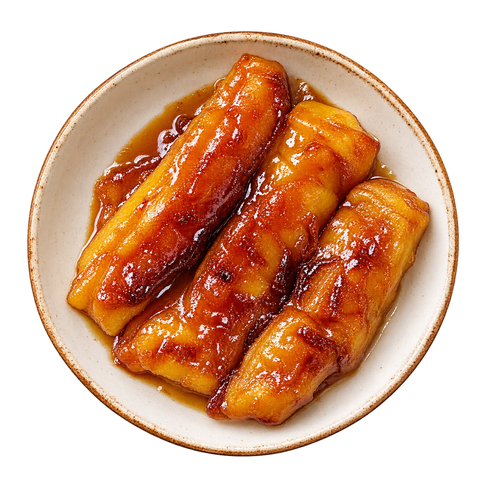

A World of Filipino Flavors.
From savory meals and comforting soups to sweet desserts and local merienda, discover the dishes that make Filipino cuisine special.
Browse by Category
Choose a category to jump to its dishes.
Main Dishes
-

FILIPINO CLASSIC
Chicken Adobo
Chicken simmered in soy sauce, vinegar, garlic, and spices.
Read about Chicken Adobo -

-

Soups and Comfort Food
-

FILIPINO COMFORT FOOD
Sinigang
A sour soup made with tamarind, vegetables, and meat or seafood.
Read about Sinigang -

Regional Specialties
-

-

BACOLOD
Chicken Inasal
Grilled chicken marinated with vinegar, calamansi, and spices.
Read about Chicken Inasal -

-

FILIPINO FAVORITE
Pancit Canton
Stir-fried noodles with vegetables, meat, and savory seasonings.
Read about Pancit Canton
Desserts
-

FILIPINO DESSERT
Halo-Halo
Shaved ice mixed with milk, sweetened ingredients, and various toppings.
Read about Halo-Halo
Snacks and Merienda
-

FILIPINO MERIENDA
Turon
Sweet banana and jackfruit wrapped in a crispy, caramelized wrapper.
Read about Turon
One Country. Countless Flavors.
Filipino cuisine is as diverse as its people. Each region has its own ingredients, cooking traditions, and dishes worth discovering.
Explore the Regions